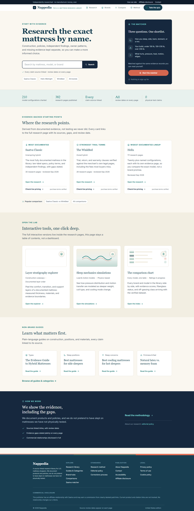
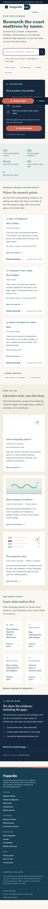

How to read this page. BEFORE photos are the real live site captured today. AFTER demos are the fixed components rendered with the exact new style values from this slice. This is a component preview, not a full-page render: the full-page photo proof is still blocked because the site cannot boot on this machine (drive nearly full). Nothing here is committed or live on the real site yet.
The layer-strata bands collapsed to zero height, so the first tool card showed an empty white box. The bands now fill the box. Scroll the BEFORE photo down to "Open the lab" to see the blank box on the live site.

app/home-v2.module.css: .strat gains height: 100% inside fixed 132px .viz
Link chips were 32px tall, below the 44px house rule. They now stand 44px on narrow screens only. Desktop is pixel-identical.

Each chip now measures 44px tall with centered text.
app/home-v2.module.css: a.chip 44px rule lives inside the max-width 900px block only
The five stats crowded into narrow columns. Rows gained air and the center gutter is now symmetric. See the strip under the hero in the BEFORE phone photo.
app/home-v2.module.css: trustGrid gap 32px rows, symmetric 16px center gutter
A doubled gap (32px) sat above tool-card titles. Now one even 16px step, matching every other card.
app/home-v2.module.css: .viz margin-bottom 16px removed, card gap carries the rhythm
On small phones the button collapses to an icon with no text. It now carries its name in code. No visual change at any width.
app/page.tsx: aria-label="Search" on the hero submit button
{kind=link}
{kind=link}